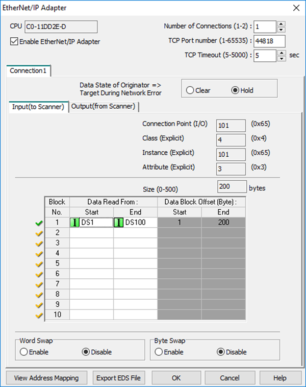
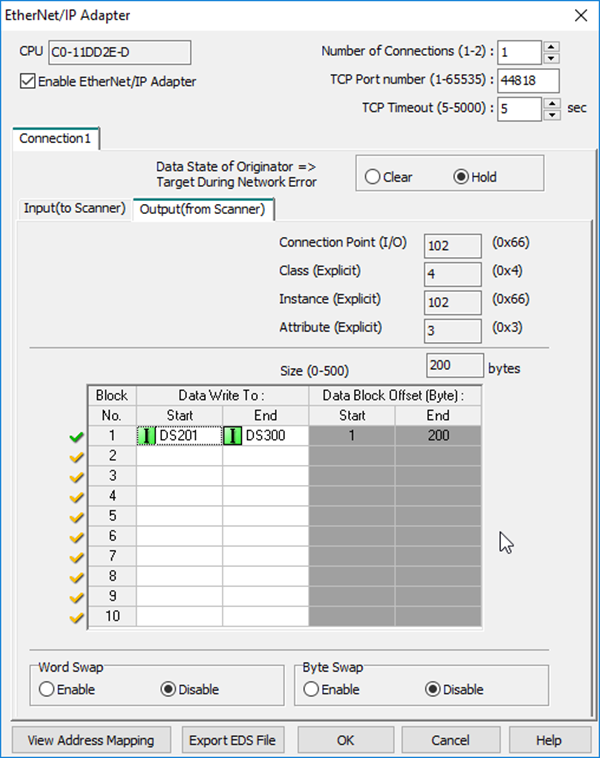
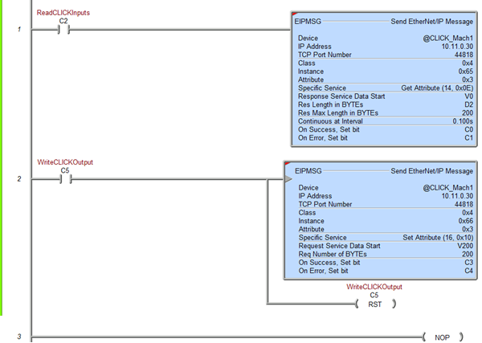
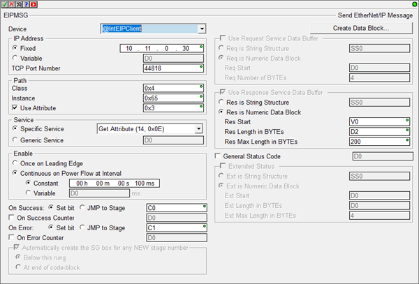
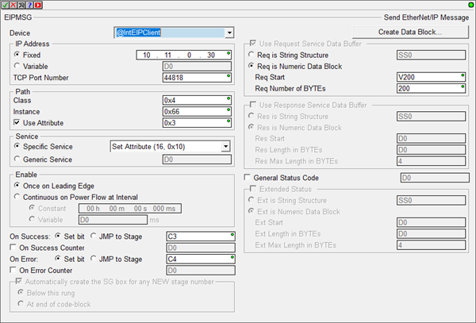
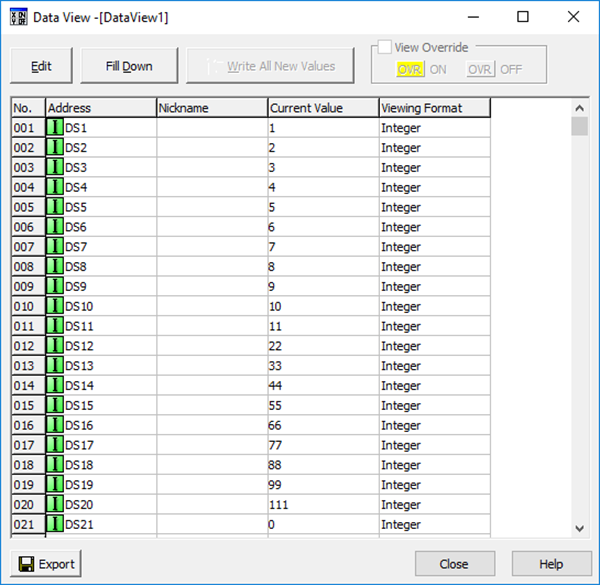
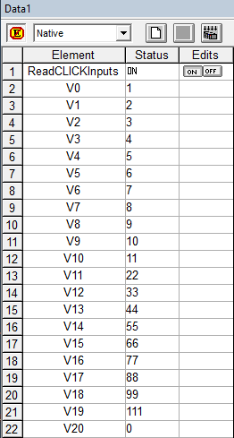
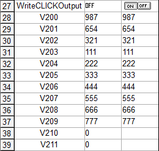
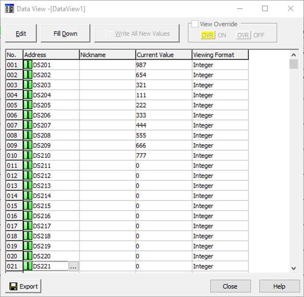

Topic: CL237

| CLICK Example for the Do-more PLC |
Topic: CL237
|
The Do-more PLCs perform EtherNet/IP with Unconnected Explicit Messaging.
Once the CLICK EtherNet/IP Adapter setup is completed and Data Blocks have been created, the EIPMSG instruction in Do-more is used to read and write data.
In this example, we have created a data block of 100 registers for the Input data and 100 registers for the Output data as shown below in the CLICK software. Take note of the Class, Instance, Attribute and Size of each Data Block configuration.


Below is the ladder logic example of the EIPMSG instruction being used to read and write data via EtherNet/IP.

Details for using the EIPMSG instruction for reading (GET) and writing (SET) data are shown below. The EIPMSG instruction can be configured to send at a Continuous Interval or to be sent once on the Leading Edge of the Enable input.
For reading (GET), it is advisable to use the Continuous Interval option but for writing (SET), data should only be sent when the values change in the Do-more PLC. It wastes bandwidth to write the same values over and over, and it can also needlessly overwrite other PLC data being sent from a different EtherNet/IP scanner/client PLC.
In each instruction:


When the Do-more EIPMSG read instruction is enabled, all the values in the Input block of the CLICK PLC should be visible:


When the Do-more EIPMSG write instruction is enabled, all the values in the Output block of the Do-more should be written to the Output block of the CLICK PLC:


CLICK Example for AB CompactLogix
CLICK Example for Productivity Series PLC
General & Extended Status EtherNet IP Error Codes